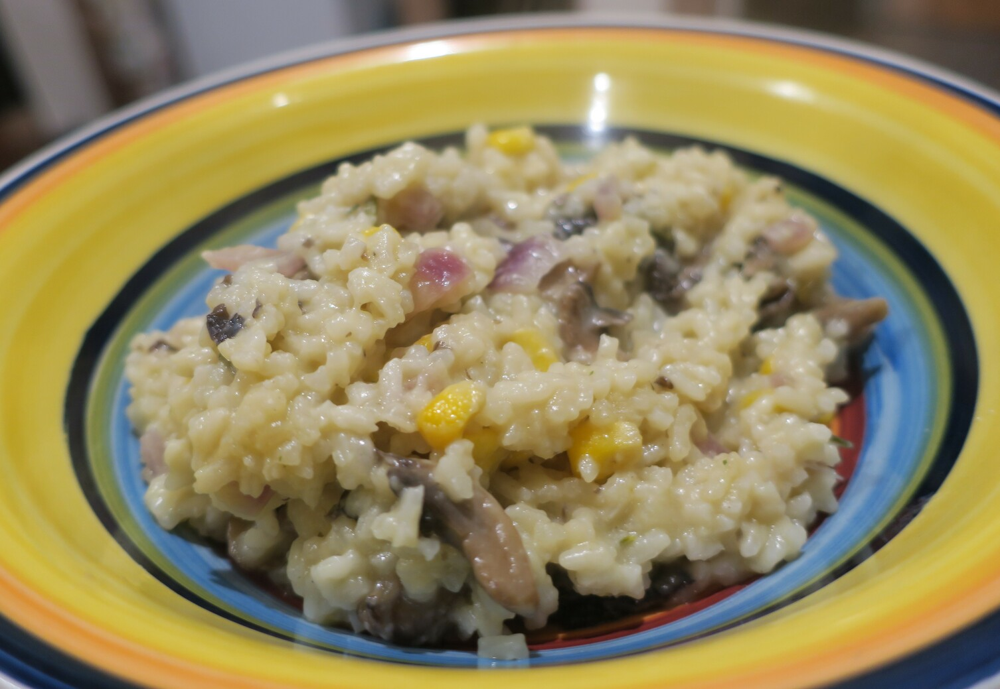

Mushroom Risotto

1/2red onionsomemushroom
Fry red onion and mushroom
someveg stock
Make veg stock and put to the side
1 1/2 cupaborio rice
Add aborio rice to big wock and quickly (2min) fry in oil
Start adding stock by ladling in a bit at a time
somewine
Add in some wine also
somerosemarysomecorn
Add in rosemary, corn and fried stuff about half way through
Keep mixing in stock until rice is soft
somecheese
Mix in some cheese
somebuttersomebacon
Optionally add butter and chicken or bacon
Serve hot
This is pretty easy but takes ages for the rice to soften.